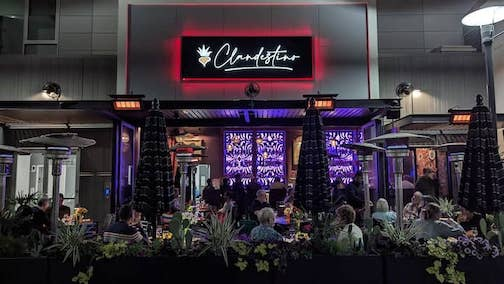
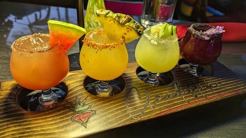
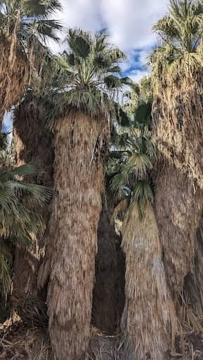

..
Palm Springs
Feb 11 - 14, La Quinta Resort
Loved the food in Palm Springs.
 Amazing food at Clandestino Restaurant
 Clandestino’s outstanding margarita flight. Watermelon Tamarind was our favorite
 Coachella Valley Preserve